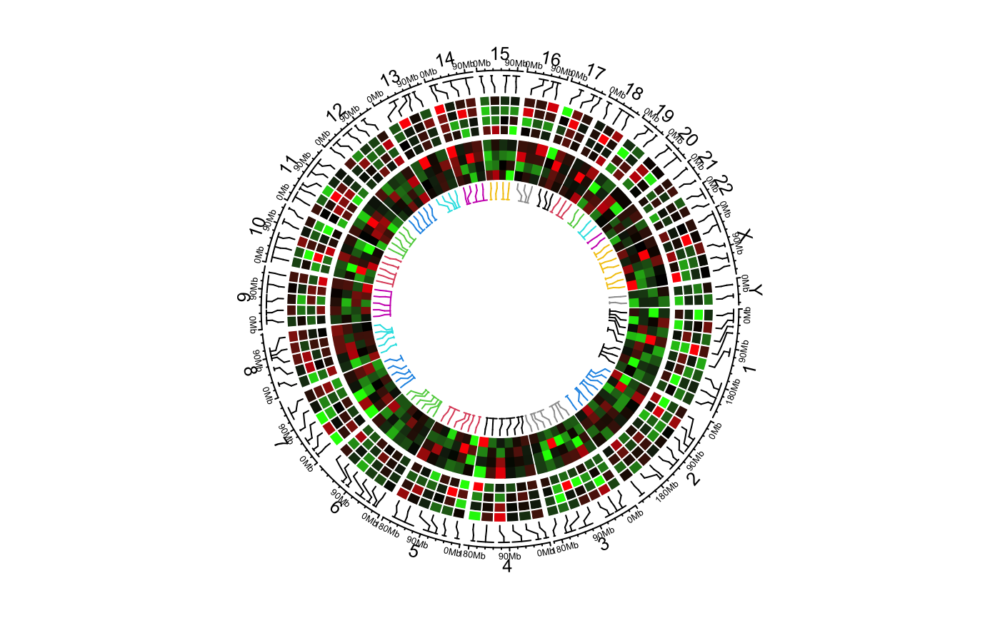

circos.genomicHeatmap.RdAdd heatmaps for selected regions
circos.genomicHeatmap( bed, col, na_col = "grey", numeric.column = NULL, border = NA, border_lwd = par("lwd"), border_lty = par("lty"), connection_height = convert_height(5, "mm"), line_col = par("col"), line_lwd = par("lwd"), line_lty = par("lty"), heatmap_height = 0.15, side = c("inside", "outside"), track.margin = circos.par("track.margin"))
| bed | a data frame in bed format, the matrix is stored from the fourth column. |
|---|---|
| col | colors for the heatmaps. The value can be a matrix or a color mapping function generated by |
| na_col | color for NA values. |
| numeric.column | column index for the numeric columns. The values can be integer index or character index |
| border | border of the heatmap grids. |
| border_lwd | line width for borders of heatmap grids |
| border_lty | line style for borders of heatmap grids |
| connection_height | height of the connection lines. If it is set to |
| line_col | col of the connection line. The value can be a vector. |
| line_lwd | line width of the connection lines. |
| line_lty | line style of the connection lines. |
| heatmap_height | height of the heatmap track |
| side | side of the heatmaps. Is the heatmap facing inside or outside? |
| track.margin | bottom and top margins |
The function visualizes heatmaps which correspond to a subset of regions in the genome. The correspondance between heatmaps and regions are identified by connection lines.
The function actually creates two tracks, one track for the connection lines and one track for the heamtaps. The heatmaps always fill the whole track.
bed = generateRandomBed(nr = 100, nc = 4) col_fun = colorRamp2(c(-1, 0, 1), c("green", "black", "red")) circos.genomicHeatmap(bed, col_fun, side = "inside", border = "white")